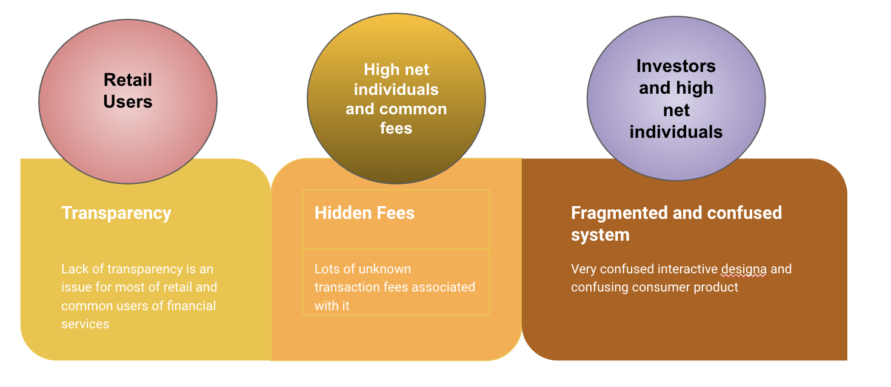
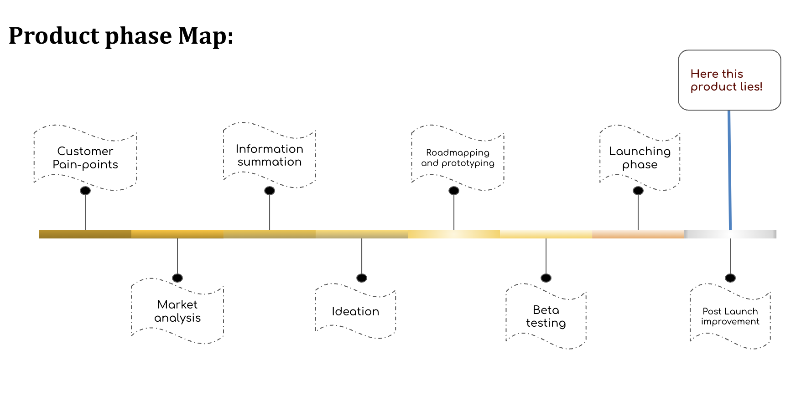
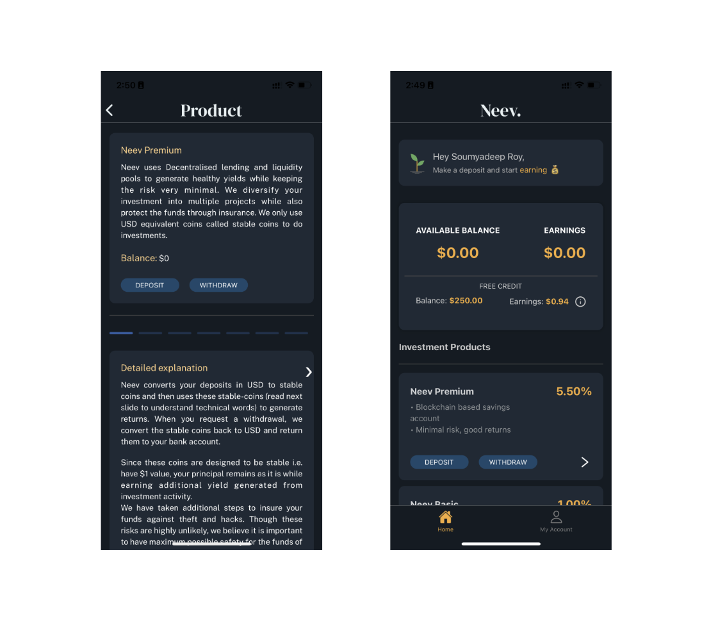
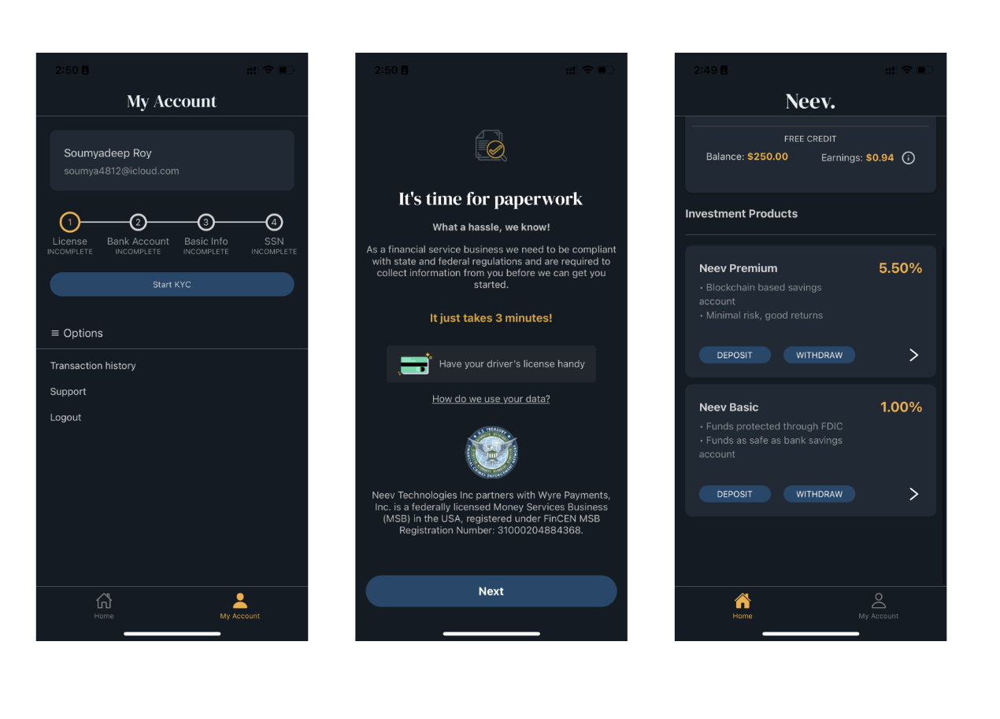
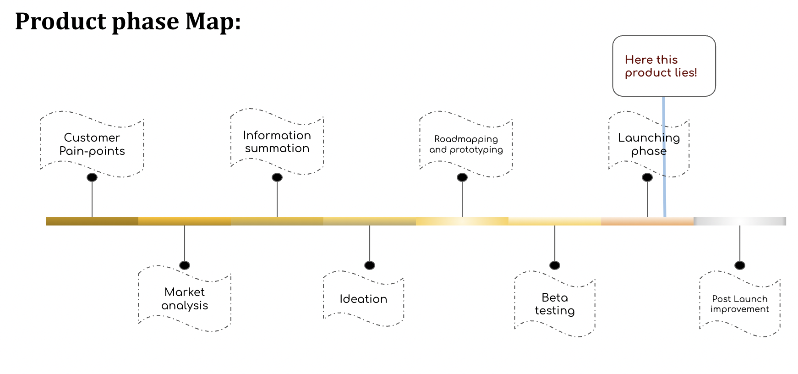
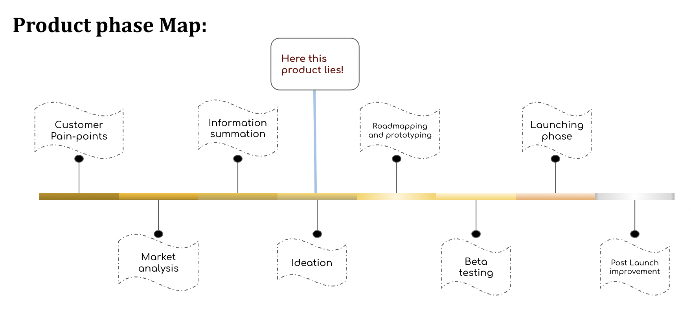
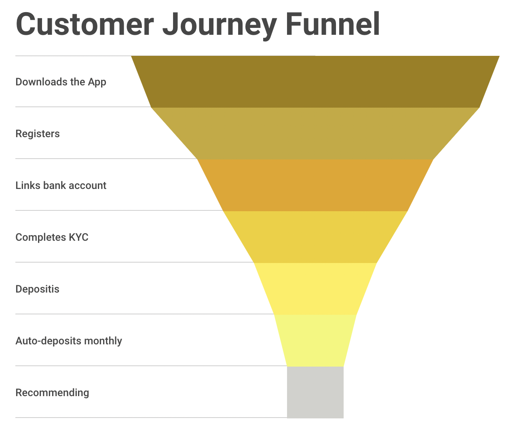

PM of Neev Finance
In Neev, he has been a co-founding team member since Aug of 2021, which is an early-stage bootstratpped startup based out of Seattle, US. He has joined Neev when it was only at an ideation stage and started taking up cross sectional responsibilities, now has taken up the reposnsibility of Financial product management- directly with CEO and lead in financial innovation & Quants.
Work as a PM
This particular section talks about the work related to Product Management in this financial service startups which is based on crypto, blockchain, web3 and being an early-stage startups, the PM's contribution is balanced on both the customer as well as backend architecture side.
Customer's Persona:
As a "right hand" product manager, his work were closely related with CEO. His job was to discover the priority topics of customer's major pain-points from the customer's persona. He was equipped with his own built sentiment analyzer to utilize the textual data and get the meaning sentiment insights and topic modelling. With 150+ CEO interviewd customer's documented data, and 7+ major topics, after analyzing through priority matrix, the major painpoints in financial services are to have lack of trust or transparancey, unknowna & sometimes execissive hidden fees, no one stop financial services. On the basis of that core product and product vision, company visions are driven.

Building the first core Product: Neev Premium
The first product is based on a kind of saving account which provides a higher APY than other competitors and it had to be the initial breaking point into market. This product development had some crucial organised stages in which he had helped the CEO from ideation to launching phase as an associate.
-
Product Type: FS, web3 savings
-
Industry: Finance, DeFi, Blockchain
-
Market Analysis: For establishing the MVP, he was involved in a robust research of current market of high yield products, the banking products, the potential DeFi products and their risks, the current CeFi and tradiFi investment scopes, other innovative markets into blockchain spaces.
-
Ideation: After doing the market reseatch, and identifying the customer's painpoints, with all the gathered information, he had helped the CEO expanding the possible product idea and filtering the different idea categories. The filtering process involved a lots of experiments and flow chart examine processes.
-
Prototyping: In the phase, He assisted the CEO in cross fucntional communication between all the teams and especiallt he took the responsibilities of coordinating with engineering and Finance side. Belonging from the background of tech and engineering, he was quick resolving the minimal technical blockholes, kept on working with tech teams hand-on-hand solving product feature steps. He helped the CEO on driving multiple more specific model experimentations to keep align with the product defined visions.
-
Beta Testing: He was also responsible for succeesful execution of Beta Phase where he was bridging the communication between people's connection team and backend engineering team to fix the bugs during the testing. He also jotted down the product demonstration for testing candidates for smooth jounrey through this phase. He was ideated the monitoring dashboard of fund flow to the entire such that all the fund flow and allocation of assets were vivid to the entire team.
-
Launching Phase: After successfully marinating teh Beta phase, team went to launch the first product. As the first product was the MVP, he assisted with the situation Go-to-market strategy by cliffing off market segment to known users such that a small set of diveresed & small groups can be catered only with utmost dedication. He was also responsible for building the sentiment analysis on the customers feedback and also ideated some of the financial features for both the customers and financial investment team to smoothen up the process of transparency and security.
Success Measurement: For the MVP of the startup, the usual success metrics are a bit different. The major success metrices focuses were on the customer growth rate and conversion rate. Though it was a small customerbase, still customer satisfacory indexes were also taken into account. The App has went through 100+ Beta testers, cuurently acquiring 500+ customer base managing more than 1M+ assests with 7x m-o-m growth before strategy revisions, with an conversion rate of 80%  
Current products on Pipeline-
Neev Basic:
He is in the charge of building the second new product entirely which just stepped into it's launching phase. This product offers more secured investment directly backed by govt. entities and complete risk-free product.
-
Product Type: FS,TradiFi savings
-
Industry: Finance, Insurance.
-
Ideation: The main product idea has come from more grined analysis of Customer's basic painpoints; which has requires a safer product; customers may able to trade off a bit with yield APY in this case. The market analysis has already been done and in this product the potential competitors analysed are the traditinal FDIC backed retail bankings and investment savings backed by3rd party FDIC banks . The main ideation step involved making a product idea overcoming the loopholes of regulations involved with compilance officer, introducing the factors of KYC and other features to compile. He worked closely with financial strategy to ensure the benchmark targets to make the market more competitive. He worked out multiple ideation processes to cut out the regulatory, price constraints and semi-innovation strategies.
-
Prototyping: In the next stage, this product outlines are needed to be aligned with the initial theme and backend architecture. As a Financial product, similar features are designed for this product also. It helps the existing customers to pivot to this product with much ease. The another objective is to make this product fit under the same thematic umbrella to maintain the same customer journey. In with the same process integration, another important layer for KYC is designed with an elaborate description for US-based customers.
-
Roadmapping: He has been building an agile roadmapping for plan execution for the particular product. As the product timeline is quick, short & less complex, the number of sprints are less. Also, in the framework on the Notion, the prioritization process is engagged to rank the tasks and also all the individual teams are allowed to auto-assign the priorty tasks according to their timelines.
-
Launching and valuable success factors: As the backend flow is similar to the previous parallel core product, the new product B-phase has been tested within internal team itself. The similar GTM has followed for this launch as well and also some new SEOs are also getting implemented. As this product is newly launched, the customer success funnels are done like this where chances of procceding are less during downloading the app to KYC completion and from deposits to auto-deposits. The NPS, CSAT, Churn rate will be key factors and for GTM, for retail target users, it is ongoing with marketing strategies and for high net individual, it will be done using cold-callings and invites initially in small-medium scales. The final success will be determined by the optimizated max. lifetime value of a customer balancing with lowest acquisition cost. As well as, theer are some architecture strategies are getting implemented at the backend so this product might attract more tractions by the end of the next version cycle.
Current products on Pipeline-
Neev Buckets:
He is currently responsible for building a brand new pivoting product of investment buckets of which will centralised one an initial stage and visioning to parallel decentralized investment statrtegies. It's goingf to be a high yield product and aiming to an opening door of investment to all the non-crypto users.
-
Product Type: Investment
-
Industry: Finance, Crypto, web3.

-
Ideation: This product is going through the ideation management phase. During latest market research, the segment are more into Yield and crypto people currently. As a startup, this product will bring in the innovations into the existing investment schemes in crypto and also give a huge scope in expanding the business to generate more revenue through a minimal chnage in strategies. In the current phase, He is resbonsible for building up partnership opportunities, processing the product application layers, syncing up with the tech team to backtest the potential product algorithms and working on SEO strategies with marketing team.
Click here for the App link